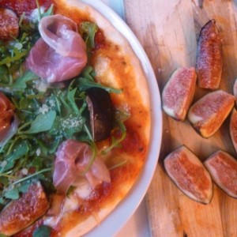
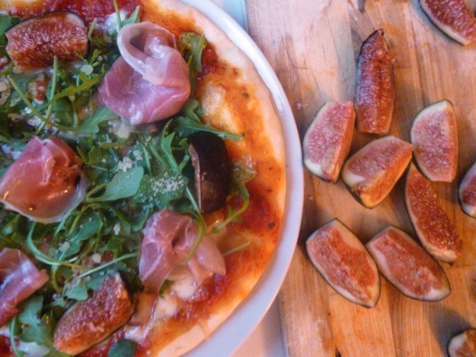

Pizza roquette-parme-mozzarella-figues

Envie d’une jolie pizza pour vos soirées estivales?
La pizza à la roquette , jambon de parme , mozzarella, figues avec une pointe de pesto est la pizza qu’ils vous faut!
Préparée à partir d’une pâte à pizza maison (recette ici), elle est composée d’une sauce tomate sur laquelle sont déposées de fines tranches de mozzarella et agrémentée de petites touches de pesto (c’est mon péché mignon). Après la cuisson , elle sera généreusement garnie (sans excès tout de même! quoique..) de roquette, de jambon de parme et de quelques morceaux de figues bien fraiches!! Le petit plus sont les quelques gouttes de vinaigre balsamique et le parmesan qui viennent conclure sa préparation et la rendre encore plus appétissante!
Vous l’aurez compris cette pizza est ultra gourmande et très fraîche, parfaite pour les longues soirées d’été qui s’annoncent (ou pour Mr qui regarde les matchs de la coupe du monde ça marche aussi !! Au passage : Allez l’Espagne)
A vos calepins!
Enregistrer
Ingrédients
- pâte a pizza maison
- coulis de tomate - 250 ml
- mozzarella - 250 g
- pesto - 3 càc
- jambon de parme - 6 tranches
- roquette - 2 belles poignées
- figues - 2
- vinaigre balsamique - 1 càs
- parmesan - 1 càs
Instructions
- Préparer votre pâte à pizza et l'étaler sur une plaque à pâtisserie recouverte de papier sulfurisé.
- Préchauffer le four à 180°
- Badigeonner la pâte de coulis de tomate à 2 cm du bord
- Couper de fines tranches de mozzarella et les repartir uniformément sur le coulis Bien essorer la mozzarella pour qu'elle ne rende pas d'eau pendant la cuisson
- Déposer de petites pointes de pesto par dessus la préparation
- Enfourner 20 min a 180°
- Une fois cuite, garnir de roquette et déposer des morceaux de jambon de parme
- Assaisonner de quelques gouttes de vinaigre balsamique
- Couper les figues en quartiers et les déposer sur la pizza
- Saupoudrer d'un peu de parmesan

Les tips de la communauté
Pizza appréciée avec commentaires positifs. Un conseil simple pour améliorer la recette avec un filet d'huile d'olive.
Astuces
- Ajouter un filet d'huile d'olive avant d'enfourner